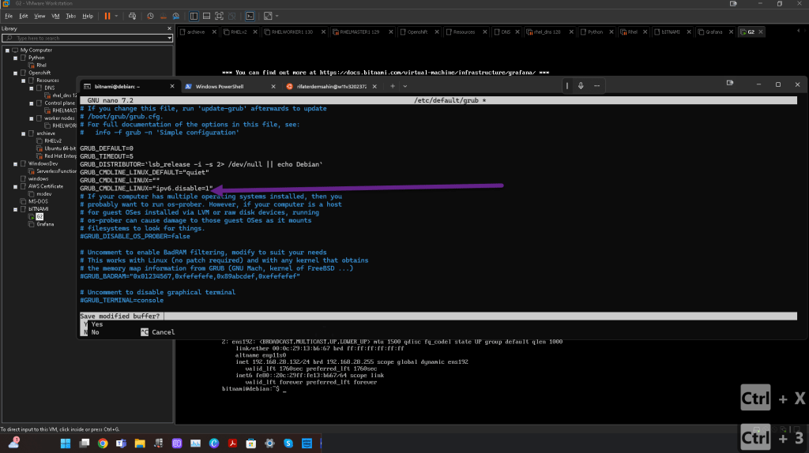
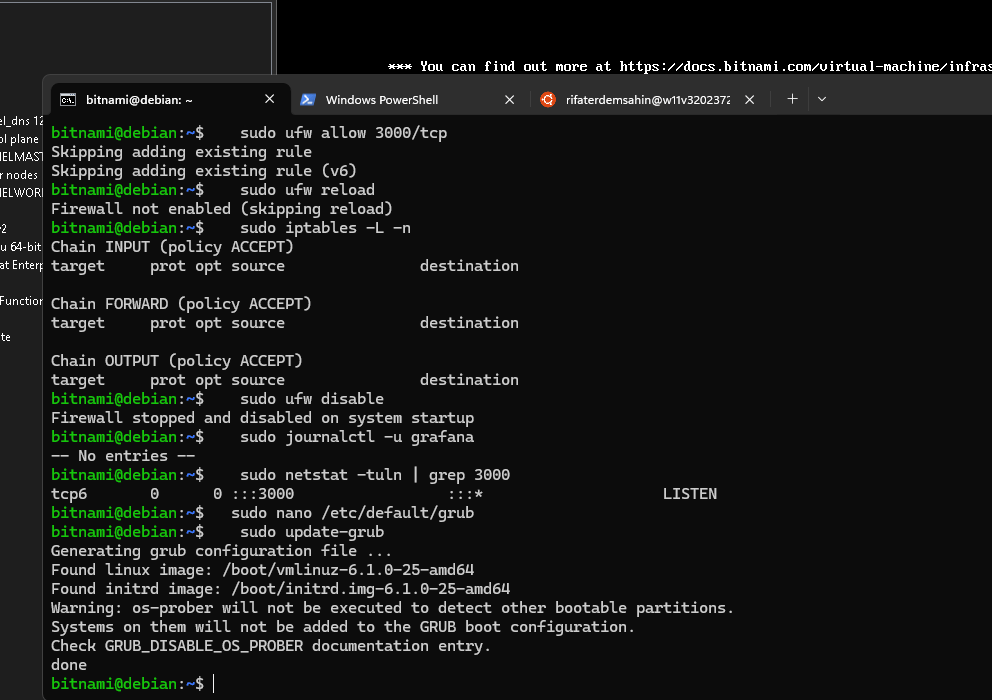
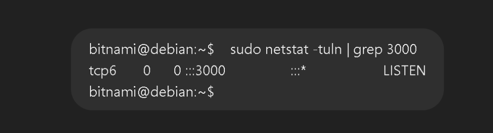
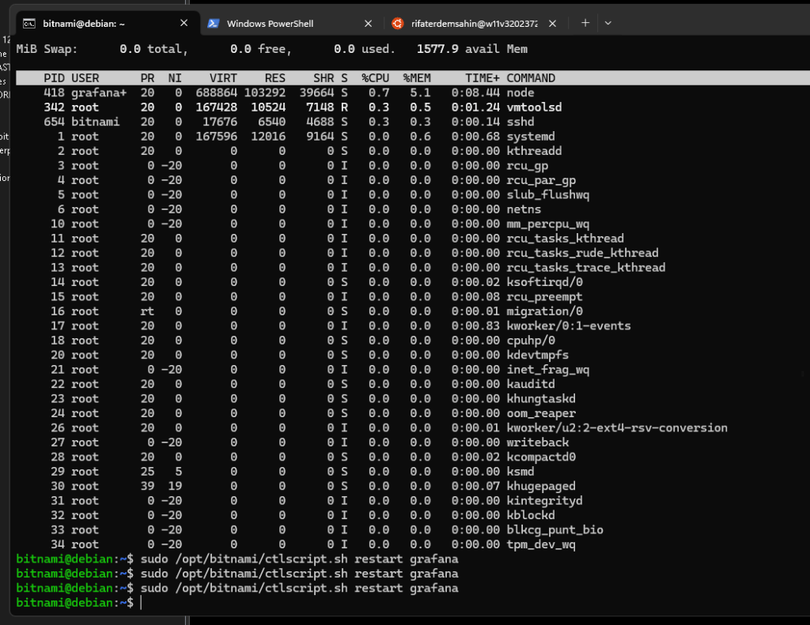

NMap over WSL Debug
The output from nmap suggests that either the VM is blocking access to port 3000, or it is not responding to the default probe (ping) that nmap uses. Since you can ping the VM successfully from your host but nmap says the host seems down, it might be that Grafana is either not running, blocked by a firewall, or misconfigured.
Here are the next steps to troubleshoot:
1. Run nmap with -Pn to Bypass Ping Check
Since nmap is indicating the host is down, but you know the VM is reachable (via ping), try scanning port 3000 with the -Pn option to skip the ping check:
nmap -Pn -p 3000 192.168.28.132
This will check whether port 3000 is open without relying on ping.
rifaterdemsahin@w11v32023720:~$ nmap -Pn -p 3000 192.168.28.132
Starting Nmap 7.80 ( https://nmap.org ) at 2024-09-27 14:13 BST
Nmap scan report for 192.168.28.132
Host is up.
PORT STATE SERVICE
3000/tcp filtered ppp
Nmap done: 1 IP address (1 host up) scanned in 2.04 seconds
rifaterdemsahin@w11v32023720:~$
2. Double Check if Grafana is Running
Verify that Grafana is running and listening on port 3000:
sudo systemctl status grafana
If Grafana is not running, start it with:
sudo systemctl start grafana
Then verify it's listening:
sudo netstat -tuln | grep 3000
You should see something like 0.0.0.0:3000 if it's listening for external connections.
3. Check Firewall Settings on VM
Make sure that the firewall on the VM is not blocking port 3000. Check the firewall status and allow traffic on port 3000 if needed:
- Check firewall status:
sudo ufw status
- If the firewall is active, allow port 3000:
sudo ufw allow 3000/tcp
sudo ufw reload
4. Check Grafana Configuration for IP Binding
If Grafana is only bound to 127.0.0.1, it will not be accessible from outside the VM.
- Open the Grafana config file:
sudo nano /etc/grafana/grafana.ini
- Ensure
http_addris set to0.0.0.0:
http_addr = 0.0.0.0
- Restart Grafana to apply the changes:
sudo systemctl restart grafana
5. Retry Accessing Grafana
After confirming Grafana is running and listening, try accessing it again from the host machine:
- Open a browser and go to:
http://192.168.28.132:3000
Let me know the result after running these steps! If nmap still shows the port as closed or filtered, there may be additional network/firewall issues to explore.
==================================================================
*** after nmap ping ***
==================================================================
The nmap scan result shows that port 3000 is in the filtered state, which means that something (most likely a firewall) is blocking access to this port, either on the virtual machine or somewhere along the network path.
Next Steps to Resolve the Issue:
1. Check VM's Firewall Again
Even if you allowed port 3000, the firewall might still block the connection for some reason. Double-check the firewall rules:
- Check the firewall status:
sudo ufw status
bitnami@debian:~$ sudo ufw status
Status: inactive
bitnami@debian:~$
- If you see that port 3000 is blocked or not listed, run these commands to allow it explicitly:
sudo ufw allow 3000/tcp
sudo ufw reload
- If you're using
iptablesinstead ofufw, check the rules with:
sudo iptables -L -n
Look for rules that may be blocking port 3000.
bitnami@debian:~$ sudo iptables -L -n
Chain INPUT (policy ACCEPT)
target prot opt source destination
Chain FORWARD (policy ACCEPT)
target prot opt source destination
Chain OUTPUT (policy ACCEPT)
target prot opt source destination
bitnami@debian:~$
2. Check if VMware Settings Might Be Blocking the Port
If the firewall rules are correct on the VM, ensure that the VMware network settings aren't restricting traffic:
-
Open VMware Workstation.
-
Go to Edit > Virtual Network Editor.
-
Check the settings for VMnet0 (if using Bridged mode) or VMnet8 (for NAT). Make sure there is no restriction on outgoing or incoming traffic on port 3000.
-
Restart the virtual machine after any changes.
3. Disable UFW Temporarily to Test
To see if the firewall is the issue, you can temporarily disable the firewall on the VM and test access:
- Disable UFW:
sudo ufw disable
- Test accessing Grafana from your host again via
http://192.168.28.132:3000.
If you can access Grafana after disabling UFW, then the firewall is likely blocking port 3000, and you’ll need to adjust the firewall rules. If it still doesn’t work, the issue might lie elsewhere.
4. Check Grafana Logs
If the firewall is not blocking port 3000, check the Grafana logs for any errors related to external access:
- View Grafana logs:
sudo journalctl -u grafana
Look for any errors related to network binding or denied access.
Firewall stopped and disabled on system startup
bitnami@debian:~$ sudo journalctl -u grafana
-- No entries --
bitnami@debian:~$
5. Ensure Port 3000 is Listening on All Interfaces
Verify that Grafana is listening on 0.0.0.0:3000:
- Check listening ports:
sudo netstat -tuln | grep 3000
You should see:
tcp 0 0 0.0.0.0:3000 0.0.0.0:* LISTEN
bitnami@debian:~$ sudo netstat -tuln | grep 3000
tcp6 0 0 :::3000 :::* LISTEN
bitnami@debian:~$
If it's only showing 127.0.0.1:3000, Grafana is not listening for external connections. In that case, you’ll need to modify /etc/grafana/grafana.ini as mentioned before:
http_addr = 0.0.0.0
Then restart Grafana:
sudo systemctl restart grafana
Summary of Next Steps:
-
Re-check the firewall on the VM.
-
Ensure VMware network settings don’t block the port.
-
Temporarily disable the VM's firewall to test.
-
Check Grafana logs for errors.
-
Verify that Grafana is listening on
0.0.0.0:3000.
Let me know how these steps go, and we can continue troubleshooting!
The output :::3000 LISTEN means that Grafana is listening on IPv6 (tcp6), which might be the reason why you're not able to connect from your host via IPv4.
Here's how to resolve the issue:
1. Force Grafana to Listen on Both IPv4 and IPv6
By default, Grafana might be set to only listen on IPv6. To make it listen on both IPv4 (0.0.0.0) and IPv6 (::), you need to update the Grafana configuration.
- Edit the Grafana configuration file:
sudo nano /opt/bitnami/grafana/conf/grafana.ini
- Find the
http_addrsetting and ensure it is set to bind to all network interfaces, including IPv4:
http_addr = 0.0.0.0
-
Save the file and exit (
Ctrl + X, thenYto save). -
Restart Grafana to apply the changes:
sudo /opt/bitnami/ctlscript.sh restart grafana
2. Check if Grafana is Now Listening on IPv4
After restarting, verify that Grafana is now listening on both IPv4 and IPv6:
- Run netstat again to check if Grafana is now bound to
0.0.0.0(IPv4):
sudo netstat -tuln | grep 3000
You should see something like:
tcp 0 0 0.0.0.0:3000 0.0.0.0:* LISTEN
3. Retry Accessing Grafana from the Host
Now, try accessing Grafana from your host machine again:
- Open your browser and go to:
http://192.168.28.132:3000
4. If Still Not Working – Disable IPv6
If Grafana continues to listen only on IPv6 and you’re still unable to access it from your host, you could disable IPv6 temporarily on the VM to force it to use IPv4.
- Disable IPv6 temporarily by editing the GRUB configuration:
sudo nano /etc/default/grub
- Add the following line to disable IPv6:
GRUB_CMDLINE_LINUX="ipv6.disable=1"

- Update GRUB:
sudo update-grub

- Reboot the VM:
sudo reboot
After the reboot, Grafana should now only bind to IPv4.
By forcing Grafana to bind to 0.0.0.0, it should become accessible over both IPv4 and IPv6. Let me know if this resolves the issue or if you encounter any further difficulties!
now output
bitnami@debian:~$ sudo netstat -tuln | grep 3000
tcp 0 0 0.0.0.0:3000 0.0.0.0:* LISTEN
bitnami@debian:~$
old result has extra6 to it

Again Restart
https://twitter.com/rifaterdemsahin/status/1839657878358991258
It looks like Grafana is correctly running and listening on 0.0.0.0:3000, and a curl test on the VM itself shows that Grafana is accessible via http://192.168.3.180:3000. Since you're still unable to access Grafana from your host machine, here are the next steps to resolve this:
1. Reconfirm Firewall Rules on the VM
Ensure that the firewall on the VM isn't blocking external access to port 3000:
- Check UFW status:
sudo ufw status
-
Ensure port 3000 is open.
-
If not already allowed, explicitly allow port 3000:
sudo ufw allow 3000/tcp
sudo ufw reload
2. Verify Host Firewall Rules
Ensure that the host machine (your physical machine) isn't blocking the connection to the VM:
- Disable the Windows Firewall temporarily:
Set-NetFirewallProfile -Profile Domain,Public,Private -Enabled False
-
Try accessing Grafana again:
-
Open a browser and navigate to
http://192.168.3.180:3000. If disabling the firewall resolves the issue, you’ll need to create a rule to allow traffic on port 3000 from your VM’s IP.
3. Use nmap to Scan from Host Again
Run nmap from your host machine to check if port 3000 is reachable now:
- On your host machine:
nmap -Pn -p 3000 192.168.3.180
If port 3000 still shows as filtered or closed, there may be a network issue.
4. Verify Bridged Network Settings in VMware
Ensure that the Bridged Networking in VMware is correctly configured:
-
Open VMware Workstation > Settings > Network Adapter.
-
Ensure Bridged Networking is selected and linked to the correct adapter (e.g., your Ethernet or Wi-Fi adapter, not VMware virtual adapters).
-
Restart the VM after confirming the settings.
5. Test Direct Communication Between Host and VM
Check if your host can reach the VM by attempting a connection directly to port 3000 using telnet or curl:
- From the host:
curl http://192.168.3.180:3000
If the connection times out, it confirms there's an issue with the network configuration or a firewall blocking the traffic.
6. Check Routing Table
Double-check your routing table to ensure your host machine knows how to reach the VM:
- Run
route printon your host machine to verify that the route to the192.168.3.xsubnet is properly configured.
Let me know the result of these steps, and we can continue troubleshooting from there.
==================================================================
*** EXPLAIN OUR BLOCK ***
==================================================================
In both of your nmap scans, you are seeing that port 3000 is reported as filtered. This means that nmap was able to reach the host (the virtual machine), but it is detecting that traffic to port 3000 is being blocked by a firewall or some other network security mechanism. The fact that the host is reachable but the port is filtered indicates that the problem is likely with firewall or network rules.
Here's a breakdown of what each part means:
-
Host is up:
This means that your virtual machine (192.168.28.132and192.168.3.180) is reachable and responding to network requests. -
PORT 3000/tcp filtered:
This means that port 3000 is not responding to nmap’s probe because something (likely a firewall) is blocking or filtering the connection. Whennmapreports a port as filtered, it generally indicates that a firewall is actively dropping the connection without providing a response (as opposed to being open or closed).
WHEN NMAP REPORTS A PORT AS FILTERED, IT GENERALLY INDICATES THAT A FIREWALL IS ACTIVELY DROPPING THE CONNECTION WITHOUT PROVIDING A RESPONSE (AS OPPOSED TO BEING OPEN OR CLOSED).
What Could Be Happening:
-
VM's Firewall is Blocking Access:
Even though Grafana is running and listening on port 3000, the firewall on the virtual machine may still be blocking external access to the port. -
Host Firewall is Blocking Access:
Your host machine's firewall might be blocking incoming or outgoing traffic to and from the VM on port 3000. -
Network Configuration in VMware:
There might be an issue with the VMware Bridged or NAT settings. The VM might be set to a different virtual network (e.g.,192.168.28.xvs.192.168.3.x), which is not properly configured for external access.
Next Steps to Resolve the Issue:
1. Verify the Firewall on the VM Again
Since nmap shows the port is filtered, it’s possible the firewall on the VM is blocking port 3000. Double-check that the firewall is allowing external connections on port 3000:
- Check UFW firewall status:
sudo ufw status
If it shows inactive, then the firewall isn’t the problem. If it's active, ensure port 3000 is allowed:
- If necessary, allow port 3000:
sudo ufw allow 3000/tcp
sudo ufw reload
2. Disable the VM’s Firewall Temporarily to Test
If you want to rule out the firewall entirely, you can temporarily disable it and then test access from the host:
- Disable UFW on the VM:
sudo ufw disable
- Try accessing Grafana from the host. If it works now, the firewall was blocking port 3000, and you'll need to adjust the rules.
3. Check Host Machine's Firewall
The firewall on your host machine might be blocking outgoing traffic to the VM’s port 3000.
- Disable the firewall on your host machine temporarily:
Set-NetFirewallProfile -Profile Domain,Public,Private -Enabled False
- Try accessing Grafana again:
Go tohttp://192.168.3.180:3000in your browser. If it works now, your host’s firewall was blocking the connection, and you’ll need to allow the connection permanently by creating a firewall rule.
4. Verify VMware Network Settings
If the firewalls are not the problem, the next step is to check your VMware settings.
-
Check if VMware is using Bridged Networking:
Open VMware Workstation, go to your virtual machine settings, and ensure that Bridged Networking is selected. -
Restart the VM:
After confirming the settings, reboot the VM to ensure the network configuration takes effect.
5. Use a Different Port
Sometimes, the port number might be blocked by system or network-level security policies. You could try changing Grafana’s default port to another port like 8080 and see if that works.
- Edit the Grafana configuration file:
sudo nano /etc/grafana/grafana.ini
- Change the port number in the config file:
http_port = 8080
- Restart Grafana:
sudo systemctl restart grafana
- Try accessing it again using
http://192.168.3.180:8080.
By following these steps, you should be able to pinpoint whether it's a firewall or network issue. Let me know how it goes!
Delete it

The configuration in the image you’ve provided shows several key settings related to Grafana’s server and protocol settings. Let me explain the difference between [server] and protocol in this context.
1. [server] Section:
The [server] section contains various settings that define how Grafana's server behaves—such as what IP address and port it binds to, the domain it uses, and more.
Key options inside [server]:
-
domain:
Specifies the domain name or IP address used to access Grafana. In your case, it’s set to192.168.3.180. This is the IP where Grafana expects incoming requests. -
http_addr:
The IP address to which Grafana binds.0.0.0.0means it binds to all available network interfaces, allowing access from any IP address. -
http_port:
The port on which Grafana listens for incoming HTTP requests. You havehttp_port = 8181set, which means you will need to access Grafana via port8181(e.g.,http://192.168.3.180:8181). -
root_url:
Defines the base URL that Grafana uses for links. This is important when Grafana is running behind a proxy or has a specific domain. In your case, it’s set dynamically using thehttp_portanddomain.
2. protocol Setting:
This setting specifically refers to how Grafana handles the HTTP requests—whether it's using HTTP, HTTPS, or other protocols.
Key options related to protocol:
-
protocol:
Determines the protocol Grafana uses for communication. In your configuration, it’s set tohttp, which means Grafana will serve requests using HTTP. Other valid options might include: -
http: Basic, unencrypted traffic. -
https: Encrypted traffic using SSL/TLS. -
h2: HTTP/2 protocol, which is faster but may require special configuration. -
socket: If Grafana should listen on a Unix socket rather than a network port.
Summary of the Difference:
-
[server]: Defines how Grafana’s internal web server is configured—what IP it listens on, which port it uses, and what domain is used for incoming connections. -
protocol: Specifies what kind of network protocol is used to serve Grafana (e.g., HTTP, HTTPS, etc.).
Recommendation:
Since you've changed the http_port to 8181, make sure you are accessing Grafana at http://192.168.3.180:8181 instead of port 3000. If the server settings are correct, this should allow you to connect.
Let me know if this clarifies the difference, or if you have further questions!
Difference ?
==================================================================
*** GUESSING GAME ***
==================================================================
The change in service name from intermapper (for port 8181) to http-proxy (for port 8080) that you see in your nmap scans is based on nmap’s service name guessing. Here's what’s happening:
1. Port Service Name Guessing by nmap:
nmaphas a built-in database that associates port numbers with common services. It uses this database to guess what service might be running on a specific port. These service names are based on widely known uses of those ports, not what is actually running on that port.
2. intermapper for Port 8181:
-
Port 8181 is commonly associated with the InterMapper service, a network monitoring tool. Because
nmapdoesn't know exactly what's running on port 8181 in your case (since the port is filtered), it guesses based on what it commonly sees on that port. -
In your case, Grafana is running on port 8181, but because the port is filtered,
nmapcan't definitively tell what service is running there, so it defaults to labeling it intermapper.
3. http-proxy for Port 8080:
-
Port 8080 is often used by HTTP proxy services, which is why
nmapidentifies it as http-proxy. -
Similar to the previous case,
nmapis guessing based on the port number. Since port 8080 is filtered (blocked),nmapcannot verify what's actually running on that port and uses the common association with HTTP proxies.
Why Does This Happen?
-
The service name that
nmapreports doesn’t indicate what is actually running on the port. It's just a best guess based on common services that run on those ports. -
The fact that both ports are filtered means that
nmapcannot probe further to confirm what is running, so it defaults to these common associations.
Solution:
To confirm what is actually running on those ports (Grafana in your case), you need to ensure that:
-
The ports are open, and
-
The firewall or network security settings are configured to allow access to those ports from your host machine.
Recap:
-
nmapis simply guessing the service name based on the port number. -
intermapperis guessed for port 8181, andhttp-proxyis guessed for port 8080 because those are common uses for these ports. -
The key issue is that the ports are being reported as filtered, which means traffic is being blocked by a firewall or network configuration.
To resolve the issue, continue focusing on opening the ports and adjusting firewall settings as discussed earlier.
Imported from rifaterdemsahin.com · 2024